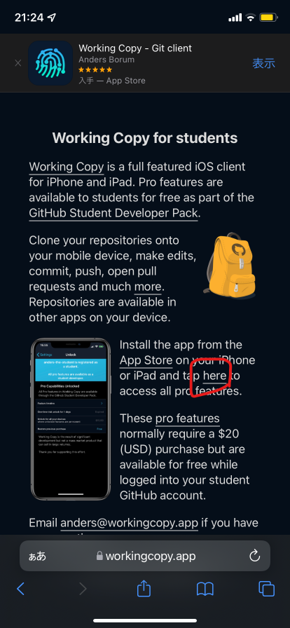
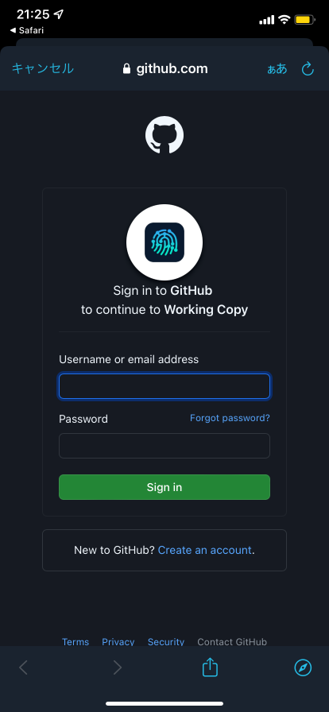
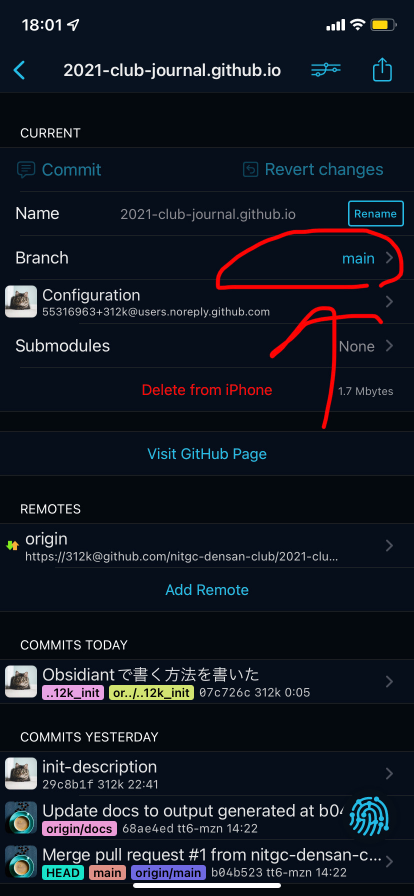
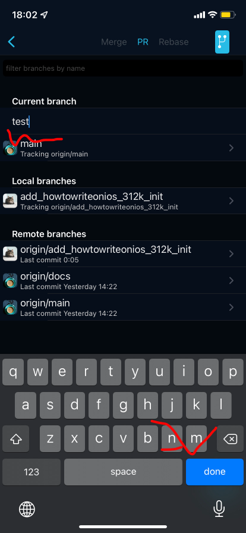
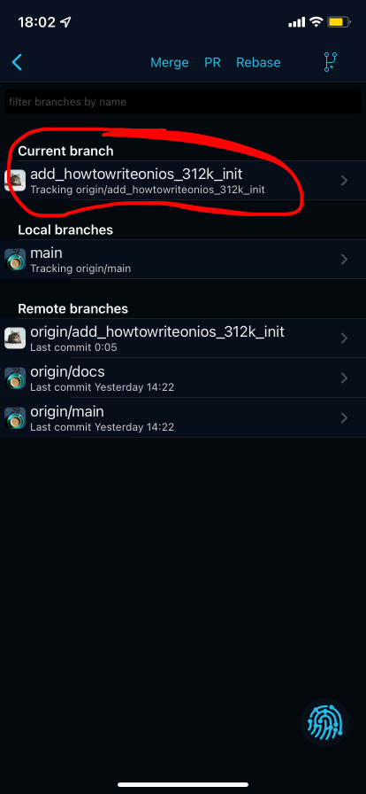

はじめに
多くの方は、マークダウンを書くときにはパソコンを使うかと思います。しかし、実はパソコンがなくてもマークダウンはかけるのです！
そこで今回はスマホでマークダウンを書く方法についてご紹介します。
このガイドは、rsteeleさんの[Mobile] Setting up iOS git-based syncing with mobile app (using Working Copy)を参考にして書きました。
前提条件
working copyを自由に使うためには、Proアカウントが必要です。(無課金でも使える機能はあります)。もし、あなたが学生ならば、working copy様が、学生向けにプランを出してくださっています。 なお、この記事はios向けです。
アプリをインストール
さて、さっそくアプリをインストールしましょう。 必要になるのは、
の2つのアプリが必要です。
Working Copyのセットアップ
- Working Copy for studentsにアクセスして、tap hereのリンクを押します。
 - アプリが自動で開かれるので、Githubのアカウントでサインインしてください。
 - サインインしたら、クローンします。右上の + ボタンをタップして、Clone repositoryをタップします。

- すると、クローンするリポジトリが表示されるので、ここでは例として、電算部のリポジトリを指定しています。入力したら、
https://github.com/nitgc-densan-club/2021-club-journal.github.io.git
Cloneしてください。
- クローンしてきたら、ブランチを切ります。
権限がない場合ブランチを切らないとRejectされますので注意です! リポジトリ名->Repository->Branchの順でタップしてください。
 - タップしたら、ブランチ一覧が表示されます。そこの右上のブランチアイコンをタップしてください。

- ブランチの名前を付けることができます。ルールに従ってブランチ名をつけてください。
 - これでブランチが新規作成されました!

OBSIDIANのセットアップ
- Obsidianを開き、Create new vaultをタップしてください。

- すると、名前を聞かれるので、お好きな名前を付けてみてください。ここではkokasai_2021にしました。

- すると、作業環境が開かれるので、右上のハンバーガーボタン->設定アイコン->Aboutの順にタップして、Languageに日本語を設定して、Relaunchを、Override config folderには
.obsidian.mobile
と入力して、Relaunchしてください。

Working CopyとObsidianの共有
ここでは、Working CopyとObsidianの共有方法について説明します。
- Working Copyのセットアップの5節まで進めたら、右上の共有ボタンをタップしてください。

- 共有画面が出たら、Setup Folder Syncをタップしてください。

- Obsidianに先ほど用意したディレクトリを選択してください。

- Obsidianを開くとフォルダが開きました!

おわりに
以上で編集できるようになりました。 Obsidianは非常に便利な編集アプリですので是非使ってみてください。